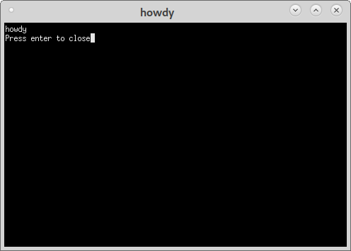

Desktop Application Menu¶
Adding a desktop file will put your application in the Applications menu when you install it.
Create a file called howdy.desktop in the howdy-0.0.1 directory. Note most file managers will drive you nuts if you rename as they automaticly add .desktop when you save the name so if you rename a .desktop be sure and delete the .desktop.
So now the directories and files look like this after building the deb
john@d10cave:~/minimal-deb$ tree
.
├── howdy-0.0.1
│ ├── debian
│ │ ├── changelog
│ │ ├── compat
│ │ ├── control
│ │ ├── copyright
│ │ ├── debhelper-build-stamp
│ │ ├── files
│ │ ├── howdy
│ │ │ ├── DEBIAN
│ │ │ │ ├── control
│ │ │ │ └── md5sums
│ │ │ └── usr
│ │ │ ├── bin
│ │ │ │ └── howdy
│ │ │ └── share
│ │ │ ├── applications
│ │ │ │ └── howdy.desktop
│ │ │ ├── doc
│ │ │ │ └── howdy
│ │ │ │ ├── changelog.gz
│ │ │ │ └── copyright
│ │ │ └── man
│ │ │ └── man1
│ │ │ └── howdy.1.gz
│ │ ├── howdy.substvars
│ │ ├── install
│ │ ├── manpages
│ │ ├── rules
│ │ └── source
│ │ └── format
│ ├── howdy.desktop
│ ├── man
│ │ └── howdy.1
│ └── src
│ └── howdy
├── howdy_0.0.1_amd64.buildinfo
├── howdy_0.0.1_amd64.changes
├── howdy_0.0.1_amd64.deb
├── howdy_0.0.1.dsc
└── howdy_0.0.1.tar.xz
15 directories, 26 files
howdy.desktop¶
[Desktop Entry]
Version=1.0
Type=Application
Name=Howdy
Comment=We just Say Howdy
Exec=howdy
Icon=/usr/share/pixmaps/linuxcncicon.png
Categories=Utility;
Terminal=true
StartupNotify=true
StartupWMClass=howdy
Name[en_US]=howdy
howdy¶
Now we have to change the howdy program so the terminal stays open. The input line waits for your input so the program won’t close until you press enter
#!/usr/bin/env python3
print('howdy')
input("Press enter to close")
Now build and install as before and in the Applications > Accessories menu is Howdy.
